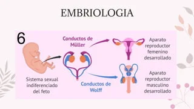

BIOLOGIA
Trabajo para contenido de página web SISTEMA REPRODUCTOR
El sistema reproductor es el conjunto de órganos cuyo funcionamiento está relacionado con la reproducción sexual, con la sexualidad y con la síntesis de las hormonas. Muchas sustancias como fluidos y feromonas también son accesorios importantes para el sistema reproductor.


En los humanos existen dos tipos de aparatos reproductores:
APARATO REPRODUCTOR FEMENINO:
Esta compuesto por los ovarios, las trompas de Falopio, el útero, el cuello uterino y la vagina.
El útero, donde se desarrolla el embrión, produce secreciones uterinas, y permite el paso del semen a las trompas uterinas o de Falopio; los ovarios, producen los ovocitos o gametos femeninos. Estas partes son internas; la vagina es el conducto que comunica con los órganos externos en la vulva, que incluye los labios genitales, el clítoris y el meato de la uretra. La vagina está unida al útero a través del cérvix, mientras que el útero está unido a los ovarios vía las trompas uterinas. La trompa y el ovario están próximos, pero no pegados. Se encuentran unidos por un ligamento,1 pero las trompas tienen cierta capacidad de movimiento para poder captar el óvulo que se expulsa a la cavidad abdominal. Además, estas estructuras no están en plano, tienen forma de C, de manera que los ovarios quedan por delante del útero.


APARATO REPRODUCTOR MASCULINO:
Se dividen en órganos externos: pene,escroto y uretra.
Organos internos:testiculo,seminales,conductos eyaculadores,próstata y glándulas bulbouretrales.
Los testículos producen espermatozoides y liberan a la sangre hormonas sexuales masculinas (testosterona). Un sistema de conductos que incluyen el epidídimo y los conductos deferentes almacenan los espermatozoides y los conducen al exterior a través del pene. En el transcurso de las relaciones sexuales se produce la eyaculación, que consiste en la liberación del líquido seminal o semen. El semen está compuesto por los espermatozoides producidos por los testículos y diversas secreciones de las glándulas sexuales accesorias.

Tanto el aparato reproductor masculino como el aparato reproductor femenino son necesarios para la reproducción. Los seres humanos, al igual que otros organismos, trasmitimos algunas de nuestras características a la siguiente generación. Lo hacemos a través de los genes, los portadores especiales de los rasgos humanos.

¿Qué es el ciclo menstrual?
El ciclo menstrual o ciclo sexual femenino es el proceso que prepara al útero de la mujer para el embarazo todos los meses, mediante el desarrollo de los gametos femeninos y una serie de cambios fisiológicos. Se considera un ciclo contando desde el primer día de un periodo o menstruación hasta el primer día del periodo siguiente.
La primera menstruación, también conocida como menarquia, es el día en el que se produce el primer sangrado vaginal con origen menstrual en una mujer, y supone la señal de que su cuerpo ya es fértil y está capacitado para que los óvulos sean fecundados para dar lugar a un cigoto que posteriormente se convertirá en el feto. Esta primera hemorragia menstrual de la mujer se produce durante la pubertad, y está considerada como el evento central de este periodo. A partir de la menarquia lo natural sería que se sucedan los ciclos menstruales con regularidad, aunque es habitual que durante los primeros meses o de sangrado haya irregularidades en cuanto a la frecuencia y en cuanto a la cantidad del periodo.
Fases del ciclo menstrual femenino:
Menstruación
La menstruación o periodo es el sangrado mensual de una mujer. Es con la menstruación que se inicia el cicllo. Durante la menstruación, el cuerpo femenino está liberándose de las células de recubrimiento del útero. La sangre menstrual fluye de este a través de una abertura en el cuello uterino, y abandona el cuerpo a través de la vagina.
Esta fase puede durar de 2 a 9 días. En ella, los niveles de hormonas llegan a su mínima concentración.
La cantidad de sangre que se pierde está en torno a los 35 ml, pero es normal que vaya de entre 10 hasta 80 ml. Lo más común es que los periodos menstruales duren de tres a cinco días, aunque al igual que el ciclo menstrual completo y el volumen de sangre, también esta cifra puede variar ligeramente dependiendo de cada mujer, y puede oscilar entre dos y siete días.
Fase folicular o preovulación
La preovulación o fase folicular es la fase que se produce tras la menstruación y, como indica su nombre, antes de la ovulación. Es la fase en la que empiezan a crecer los óvulos inmaduros en el interior del folículo.
En ella, el ovario produce unas hormonas llamadas estrógenos, que se encargan de hacer que uno de los óvulos que se encuentran en su interior madure. Normalmente se da entre los días 6 y 13 del ciclo, aunque pueden variar incluso en la misma mujer, debido a una gran variedad de factores que van desde la pérdida de peso al estrés emocional, a enfermedades, al exceso de ejercicio o incluso la dieta. Esta fase suele durar entre 7 y 10 días. Aquí empiezan a subir los niveles de la hormona foliculo-estimulante, la hormona luteinizante y la progesterona. Este efecto hace que el cerebro esté abierto a la novedad.
Ovulación
Durante esta fase, el óvulo completa el proceso de maduración y es trasladado desde el ovario en el que estaba alojado hasta el útero, a través de una de las trompas de Falopio. Esta fase dura entre 3 y 6 días. Los niveles hormonales aumentan y ayudan a preparar el recubrimiento del útero para el embarazo; por este motivo la mayor probabilidad de embarazo de una mujer es durante los tres días antes de la ovulación o en el mismo día de la ovulación.
En esta fase se produce el pico de la hormona folículo-estimulante, la hormona luteinizantey la progesterona. Esto activa los centros del cerebro de la mujer relacionados con la comunicación verbal, el placr y la socialización.
Fase lútea o postovulación
En caso de que la fecundación del óvulo no se haya producido, dicho óvulo acaba involucionando y es expulsado en la próxima menstruación. Tras la postovulación empieza un nuevo ciclo menstrual. Dura entre 10 a 16 días. Aquí baja la concentración de la hormona folículo-estimulante, la hormona luteinizante y la progesterona.
En esta fase, la bioquímica del cerebro de la mujer facilita la creatividad que se manifiesta en tareas concretas.
Desprendimento del endometrio
Corresponde al primer desprendimiento de la parede del endometrio. El primer instante en que la sangre menstrual pasa a través del cérvix. Dura entre 1 y 2 días. Aquí baja la concentración de la hormona folículo-estimulante, la hormona luteinizante y la progesterona.
Duración del ciclo menstrual
El ciclo menstrual promedio tiene una duración de 28 días, aunque puede ser algo más corto o algo más largo, llegando a variar de 21 a 45 días, dependiendo de cada persona y de su cuerpo.
El periodo en el que la mujer es más fértil y, por tanto, la probabilidad de que sus óvulos sean fecundados y se quede embarazada, es mayor durante varios días previos a la ovulación, este día, y uno o dos días después. En ciclos normales, estos días fértiles suelen corresponderse con la segunda semana y el comienzo de la tercera.
Cuando con la edad los ciclos menstruales no se suceden y la mujer deja de menstruar tiene lugar la menopausia, su último sangrado. Aunque la edad a la que se produce es diferente en cada mujer, tanto por genética como por factores ambientales, por lo general tiene lugar entre los 45 y los 55 años.
Los trastornos asociados a los ciclos menstruales son comunes. Las mujeres pueden tener distintos problemas, desde dolor (dismenorrea, a menudo acompañada de cólicos fuertes) hasta sangrado abundante o anormal y periodos ausentes (amenorrea).
Uno de los motivos por los que se produce esta ausencia del periodo son ciertos métodos anticonceptivos, aquellos que están basados en hormonas, que pueden afectar hasta al 50 por ciento de los ciclos. También la lactancia materna, sobre todo cuando se da el pecho con frecuencia; es la llamada amenorrea lactacional.
Es habitual que la menstruación afecte a otros sistemas del organismo de la mujer. Por ejemplo, en el caso de aquellas mujeres que padecen alguna enfermedad neurológica, esta puede empeorar durante el ciclo menstrual. También hay estudios que han demostrado que puede interferir en la epilepsia y la función de las hormonas tiroideas.
El ciclo menstrual está regulado por la interacción compleja de hormonas: la hormona luteinizante, la hormona foliculoestimulante y las hormonas sexuales femeninas (estrógenos y progesterona). El ciclo menstrual tiene tres fases: Folicular (antes de la liberación del óvulo) Ovulatoria (liberación del huevo)